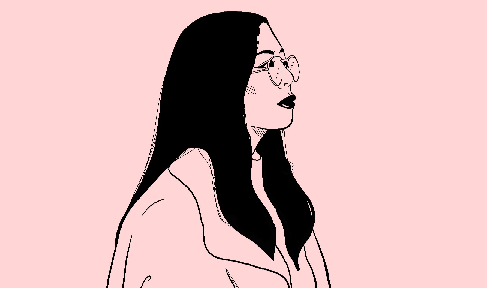

About Me
My name is Aleesa! I'm a Filipino-American freelance illustrator based in California.
I've been an artist and a writer for as long as I can remember, and so I especially love any form of illustrative storytelling, whether that's be in the form of comics, visual novels, or video games. My goal one day is to write my own webcomic, publish my own novel with original illustrations, or even create a visual novel. If in another life or this life, or if I'm meant to make an art as a career in this one, I'd love to design video game characters and write their stories.
By day, I work as an ICU social worker! You can find more about me and view my other works at my art card, here!